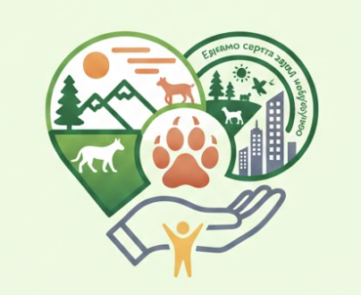

Хто ми?

Ми молода волонтерська організація, заснована на базі Національного університету "Львівська політехніка" літом 2025 року студентами інтузіастими, які хотіли організувати активну молодь, щоб допомагати своїй країні.
Наша місія
Твої руки — це сила.
Ми збираємо ресурси та енергію людей, щоб перетворити їх на щит для нашої природи та громади. Кожен крок від лісу до міста — це твоя можливість допомогти.